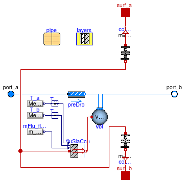

Package with radiant slab models
Information
This package contains models for radiant slabs
with pipes or a capillary heat exchanger
embedded in the construction.
Extends from Modelica.Icons.VariantsPackage (Icon for package containing variants).
Package Content
| Name |
Description |
 UsersGuide UsersGuide
|
User's Guide |
| ParallelCircuitsSlab
|
Model of multiple parallel circuits of a radiant slab |
| SingleCircuitSlab
|
Model of a single circuit of a radiant slab |
 Types Types
|
Package with type definitions |
 Examples Examples
|
Collection of models that illustrate model use and test models |
 BaseClasses BaseClasses
|
Package with base classes for Buildings.Fluid.HeatExchangers.RadiantSlabs |
Model of multiple parallel circuits of a radiant slab

Information
This is a model of a radiant slab with pipes or a capillary heat exchanger
embedded in the construction.
The model is a composition of multiple models of
Buildings.Fluid.HeatExchangers.RadiantSlabs.SingleCircuitSlab
that are arranged in a parallel.
The parameter nCir declares the number of parallel flow circuits.
Each circuit will have the same mass flow rate, and it is exposed to the same
port variables for the heat port at the two surfaces, and for the flow inlet and outlet.
A typical model application is as follows: Suppose a large room has a radiant slab with two parallel circuits
with the same pipe spacing and pipe length. Then, rather than using two instances of
Buildings.Fluid.HeatExchangers.RadiantSlabs.SingleCircuitSlab,
this system can be modeled using one instance of this model in order to reduce computing effort.
See
Buildings.Fluid.HeatExchangers.RadiantSlabs.Examples.SingleCircuitMultipleCircuitEpsilonNTU for an example
that shows that the models give identical results.
Since this model is a parallel arrangment of nCir models of
Buildings.Fluid.HeatExchangers.RadiantSlabs.SingleCircuitSlab,
we refer to
Buildings.Fluid.HeatExchangers.RadiantSlabs.SingleCircuitSlab
for the model documentation.
See the
user's guide for more information.
Implementation
To allow a better comment for the nominal mass flow rate, i.e., to specify that
its value is for all circuits combined, this
model does not inherit
Buildings.Fluid.Interfaces.PartialTwoPortInterface.
Extends from Modelica.Fluid.Interfaces.PartialTwoPort (Partial component with two ports), Buildings.Fluid.HeatExchangers.RadiantSlabs.BaseClasses.Slab (Base class for radiant slab), Buildings.Fluid.Interfaces.LumpedVolumeDeclarations (Declarations for lumped volumes), Buildings.Fluid.Interfaces.TwoPortFlowResistanceParameters (Parameters for flow resistance for models with two ports).
Parameters
| Type | Name | Default | Description |
|---|
| replaceable package Medium | PartialMedium | Medium in the component |
| SystemType | sysTyp | | Radiant system type |
| Distance | disPip | | Pipe distance [m] |
| Generic | pipe | | Record for pipe geometry and material |
| Integer | nCir | 1 | Number of parallel circuits |
| Integer | nSeg | if heatTransfer == Types.Hea... | Number of volume segments in each circuit (along flow path) |
| Length | length | A/disPip/nCir | Length of the pipe of a single circuit [m] |
| HeatTransfer | heatTransfer | Types.HeatTransfer.EpsilonNTU | Model for heat transfer between fluid and slab |
| Construction |
| Generic | layers | | Definition of the construction, which must have at least two material layers |
| Integer | iLayPip | | Number of the interface layer in which the pipes are located |
| Area | A | | Surface area of radiant slab (all circuits combined) [m2] |
| Nominal condition |
| Pressure | dp_nominal | Modelica.Fluid.Pipes.BaseCla... | Pressure difference [Pa] |
| MassFlowRate | m_flow_nominal | | Nominal mass flow rate of all circuits combined [kg/s] |
| Assumptions |
| Boolean | allowFlowReversal | system.allowFlowReversal | = true to allow flow reversal, false restricts to design direction (port_a -> port_b) |
| Initialization |
| Construction |
| Boolean | steadyStateInitial | false | =true initializes dT(0)/dt=0, false initializes T(0) at fixed temperature using T_a_start, T_c_start and T_b_start |
| Temperature | T_a_start | 293.15 | Initial temperature at surf_a, used if steadyStateInitial = false [K] |
| Temperature | T_b_start | 293.15 | Initial temperature at surf_b, used if steadyStateInitial = false [K] |
| AbsolutePressure | p_start | Medium.p_default | Start value of pressure [Pa] |
| Temperature | T_start | Medium.T_default | Start value of temperature [K] |
| MassFraction | X_start[Medium.nX] | Medium.X_default | Start value of mass fractions m_i/m [kg/kg] |
| ExtraProperty | C_start[Medium.nC] | fill(0, Medium.nC) | Start value of trace substances |
| ExtraProperty | C_nominal[Medium.nC] | fill(1E-2, Medium.nC) | Nominal value of trace substances. (Set to typical order of magnitude.) |
| Dynamics |
| Equations |
| Dynamics | energyDynamics | Modelica.Fluid.Types.Dynamic... | Formulation of energy balance |
| Dynamics | massDynamics | energyDynamics | Formulation of mass balance |
| Real | mSenFac | 1 | Factor for scaling the sensible thermal mass of the volume |
| Flow resistance |
| Boolean | computeFlowResistance | true | =true, compute flow resistance. Set to false to assume no friction |
| Boolean | from_dp | false | = true, use m_flow = f(dp) else dp = f(m_flow) |
| Boolean | linearizeFlowResistance | false | = true, use linear relation between m_flow and dp for any flow rate |
| Real | deltaM | 0.1 | Fraction of nominal flow rate where flow transitions to laminar |
| Advanced |
| MassFlowRate | m_flow_small | 1E-4*abs(m_flow_nominal) | Small mass flow rate of all circuits combined for regularization of zero flow [kg/s] |
| Boolean | homotopyInitialization | true | = true, use homotopy method |
| Diagnostics |
| Boolean | show_T | false | = true, if actual temperature at port is computed |
Connectors
| Type | Name | Description |
|---|
| HeatPort_a | surf_a | Heat port at construction surface |
| HeatPort_a | surf_b | Heat port at construction surface |
Modelica definition
model ParallelCircuitsSlab
"Model of multiple parallel circuits of a radiant slab"
extends Modelica.Fluid.Interfaces.PartialTwoPort(
port_a(p(start=p_start,
nominal=Medium.p_default)),
port_b(p(start=p_start,
nominal=Medium.p_default)));
extends Buildings.Fluid.HeatExchangers.RadiantSlabs.BaseClasses.Slab;
extends Buildings.Fluid.Interfaces.LumpedVolumeDeclarations;
extends Buildings.Fluid.Interfaces.TwoPortFlowResistanceParameters(
dp_nominal =
Modelica.Fluid.Pipes.BaseClasses.WallFriction.Detailed.pressureLoss_m_flow(
m_flow=m_flow_nominal/nCir,
rho_a=rho_default,
rho_b=rho_default,
mu_a=mu_default,
mu_b=mu_default,
length=length,
diameter=pipe.dIn,
roughness=pipe.roughness,
m_flow_small=m_flow_small/nCir));
parameter Integer nCir(min=1) = 1
"Number of parallel circuits";
parameter Integer nSeg(min=1) =
if heatTransfer==Types.HeatTransfer.EpsilonNTU
then 1
else 5
"Number of volume segments in each circuit (along flow path)";
parameter Modelica.SIunits.Area A
"Surface area of radiant slab (all circuits combined)";
parameter Modelica.SIunits.Length length = A/disPip/nCir
"Length of the pipe of a single circuit";
parameter Modelica.SIunits.MassFlowRate m_flow_nominal
"Nominal mass flow rate of all circuits combined";
parameter Modelica.SIunits.MassFlowRate m_flow_small(min=0) = 1E-4*
abs(m_flow_nominal)
"Small mass flow rate of all circuits combined for regularization of zero flow";
final parameter Modelica.SIunits.Velocity v_nominal=
4*m_flow_nominal/pipe.dIn^2/Modelica.Constants.pi/rho_default/nCir
"Velocity at m_flow_nominal";
// Parameters used for the fluid model implementation
parameter Boolean homotopyInitialization = true
"= true, use homotopy method";
parameter Buildings.Fluid.HeatExchangers.RadiantSlabs.Types.HeatTransfer
heatTransfer=Types.HeatTransfer.EpsilonNTU
"Model for heat transfer between fluid and slab";
// Diagnostics
parameter Boolean show_T = false
"= true, if actual temperature at port is computed";
Modelica.SIunits.MassFlowRate m_flow(start=0) = port_a.m_flow
"Mass flow rate from port_a to port_b (m_flow > 0 is design flow direction) for all circuits combined";
Modelica.SIunits.Pressure dp(start=0, displayUnit="Pa") = port_a.p - port_b.p
"Pressure difference between port_a and port_b";
Medium.ThermodynamicState sta_a=
if homotopyInitialization
then
Medium.setState_phX(port_a.p,
homotopy(actual=
noEvent(
actualStream(port_a.h_outflow)),
simplified=
inStream(port_a.h_outflow)),
homotopy(actual=
noEvent(
actualStream(port_a.Xi_outflow)),
simplified=
inStream(port_a.Xi_outflow)))
else
Medium.setState_phX(port_a.p,
noEvent(
actualStream(port_a.h_outflow)),
noEvent(
actualStream(port_a.Xi_outflow)))
if
show_T
"Medium properties in port_a";
Medium.ThermodynamicState sta_b=
if homotopyInitialization
then
Medium.setState_phX(port_b.p,
homotopy(actual=
noEvent(
actualStream(port_b.h_outflow)),
simplified=port_b.h_outflow),
homotopy(actual=
noEvent(
actualStream(port_b.Xi_outflow)),
simplified=port_b.Xi_outflow))
else
Medium.setState_phX(port_b.p,
noEvent(
actualStream(port_b.h_outflow)),
noEvent(
actualStream(port_b.Xi_outflow)))
if
show_T
"Medium properties in port_b";
Buildings.Fluid.HeatExchangers.RadiantSlabs.SingleCircuitSlab sla(
redeclare final package Medium =
Medium,
final heatTransfer=heatTransfer,
final sysTyp=sysTyp,
final A=A/nCir,
final disPip=disPip,
final pipe=pipe,
final layers=layers,
final steadyStateInitial=steadyStateInitial,
final iLayPip=iLayPip,
final T_a_start=T_a_start,
final T_b_start=T_b_start,
final energyDynamics=energyDynamics,
final massDynamics=massDynamics,
final p_start=p_start,
final T_start=T_start,
final X_start=X_start,
final C_start=C_start,
final C_nominal=C_nominal,
final allowFlowReversal=allowFlowReversal,
final m_flow_nominal=m_flow_nominal/nCir,
final m_flow_small=m_flow_small/nCir,
final homotopyInitialization=homotopyInitialization,
final from_dp=from_dp,
final dp_nominal=dp_nominal,
final linearizeFlowResistance=linearizeFlowResistance,
final deltaM=deltaM,
final nSeg=nSeg,
final length=length,
final ReC=4000)
"Single parallel circuit of the radiant slab";
protected
parameter Medium.ThermodynamicState state_default =
Medium.setState_pTX(
T=Medium.T_default,
p=Medium.p_default,
X=Medium.X_default[1:Medium.nXi])
"Start state";
parameter Modelica.SIunits.Density rho_default =
Medium.density(state_default);
parameter Modelica.SIunits.DynamicViscosity mu_default =
Medium.dynamicViscosity(state_default)
"Dynamic viscosity at nominal condition";
Buildings.Fluid.HeatExchangers.RadiantSlabs.BaseClasses.MassFlowRateMultiplier
masFloMul_a(
redeclare final package Medium =
Medium,
final k=nCir)
"Mass flow multiplier, used to avoid having to instanciate multiple slab models";
Buildings.Fluid.HeatExchangers.RadiantSlabs.BaseClasses.MassFlowRateMultiplier
masFloMul_b(
redeclare final package Medium =
Medium,
final k=nCir)
"Mass flow multiplier, used to avoid having to instanciate multiple slab models";
Buildings.Fluid.HeatExchangers.RadiantSlabs.BaseClasses.HeatFlowRateMultiplier
heaFloMul_a(
final k=nCir)
"Heat flow rate multiplier, used to avoid having to instanciate multiple slab models";
Buildings.Fluid.HeatExchangers.RadiantSlabs.BaseClasses.HeatFlowRateMultiplier
heaFloMul_b(
final k=nCir)
"Heat flow rate multiplier, used to avoid having to instanciate multiple slab models";
equation
connect(sla.port_b, masFloMul_b.port_a);
connect(masFloMul_b.port_b, port_b);
connect(port_a, masFloMul_a.port_b);
connect(masFloMul_a.port_a, sla.port_a);
connect(sla.surf_a,heaFloMul_a. port_a);
connect(heaFloMul_a.port_b, surf_a);
connect(sla.surf_b,heaFloMul_b. port_a);
connect(heaFloMul_b.port_b, surf_b);
end ParallelCircuitsSlab;
Model of a single circuit of a radiant slab

Information
This is a model of a single flow circuit of a radiant slab with pipes or a capillary heat exchanger
embedded in the construction.
For a model with multiple parallel flow circuits, see
Buildings.Fluid.HeatExchangers.RadiantSlabs.ParallelCircuitsSlab.
See the
user's guide for more information.
Extends from Buildings.Fluid.HeatExchangers.RadiantSlabs.BaseClasses.Slab (Base class for radiant slab), Buildings.Fluid.FixedResistances.BaseClasses.Pipe (Model of a pipe with finite volume discretization along the flow path).
Parameters
| Type | Name | Default | Description |
|---|
| SystemType | sysTyp | | Radiant system type |
| Distance | disPip | | Pipe distance [m] |
| Generic | pipe | | Record for pipe geometry and material |
| replaceable package Medium | PartialMedium | Medium in the component |
| Integer | nSeg | if heatTransfer == Types.Hea... | Number of volume segments |
| Length | thicknessIns | 0 | Thickness of insulation [m] |
| ThermalConductivity | lambdaIns | 0.04 | Heat conductivity of insulation [W/(m.K)] |
| Length | diameter | pipe.dIn | Pipe diameter (without insulation) [m] |
| Length | length | A/disPip | Length of the pipe [m] |
| HeatTransfer | heatTransfer | Types.HeatTransfer.EpsilonNTU | Model for heat transfer between fluid and slab |
| Construction |
| Generic | layers | | Definition of the construction, which must have at least two material layers |
| Integer | iLayPip | | Number of the interface layer in which the pipes are located |
| Area | A | | Surface area of radiant slab [m2] |
| Nominal condition |
| MassFlowRate | m_flow_nominal | | Nominal mass flow rate [kg/s] |
| Pressure | dp_nominal | Modelica.Fluid.Pipes.BaseCla... | Pressure difference [Pa] |
| Initialization |
| MassFlowRate | m_flow.start | 0 | Mass flow rate from port_a to port_b (m_flow > 0 is design flow direction) [kg/s] |
| Pressure | dp.start | 0 | Pressure difference between port_a and port_b [Pa] |
| Initialization |
| Construction |
| Boolean | steadyStateInitial | false | =true initializes dT(0)/dt=0, false initializes T(0) at fixed temperature using T_a_start, T_c_start and T_b_start |
| Temperature | T_a_start | 293.15 | Initial temperature at surf_a, used if steadyStateInitial = false [K] |
| Temperature | T_b_start | 293.15 | Initial temperature at surf_b, used if steadyStateInitial = false [K] |
| Temperature | T_c_start | (T_a_start*con_b[1].layers.R... | Initial construction temperature in the layer that contains the pipes, used if steadyStateInitial = false [K] |
| AbsolutePressure | p_start | Medium.p_default | Start value of pressure [Pa] |
| Temperature | T_start | Medium.T_default | Start value of temperature [K] |
| MassFraction | X_start[Medium.nX] | Medium.X_default | Start value of mass fractions m_i/m [kg/kg] |
| ExtraProperty | C_start[Medium.nC] | fill(0, Medium.nC) | Start value of trace substances |
| ExtraProperty | C_nominal[Medium.nC] | fill(1E-2, Medium.nC) | Nominal value of trace substances. (Set to typical order of magnitude.) |
| Dynamics |
| Equations |
| Dynamics | energyDynamics | Modelica.Fluid.Types.Dynamic... | Formulation of energy balance |
| Dynamics | massDynamics | energyDynamics | Formulation of mass balance |
| Real | mSenFac | 1 | Factor for scaling the sensible thermal mass of the volume |
| Assumptions |
| Boolean | allowFlowReversal | true | = true to allow flow reversal, false restricts to design direction (port_a -> port_b) |
| Advanced |
| MassFlowRate | m_flow_small | 1E-4*abs(m_flow_nominal) | Small mass flow rate for regularization of zero flow [kg/s] |
| Boolean | homotopyInitialization | true | = true, use homotopy method |
| Flow resistance |
| Boolean | from_dp | false | = true, use m_flow = f(dp) else dp = f(m_flow) |
| Boolean | linearizeFlowResistance | false | = true, use linear relation between m_flow and dp for any flow rate |
| Real | deltaM | 0.1 | Fraction of nominal flow rate where flow transitions to laminar |
| Real | ReC | 4000 | Reynolds number where transition to turbulent starts |
Connectors
| Type | Name | Description |
|---|
| HeatPort_a | surf_a | Heat port at construction surface |
| HeatPort_a | surf_b | Heat port at construction surface |
| FluidPort_a | port_a | Fluid connector a (positive design flow direction is from port_a to port_b) |
| FluidPort_b | port_b | Fluid connector b (positive design flow direction is from port_a to port_b) |
Modelica definition
model SingleCircuitSlab
"Model of a single circuit of a radiant slab"
extends Buildings.Fluid.HeatExchangers.RadiantSlabs.BaseClasses.Slab;
extends Buildings.Fluid.FixedResistances.BaseClasses.Pipe(
nSeg=
if heatTransfer==Types.HeatTransfer.EpsilonNTU
then 1
else 5,
final diameter=pipe.dIn,
length=A/disPip,
final thicknessIns=0,
final lambdaIns = 0.04,
dp_nominal =
Modelica.Fluid.Pipes.BaseClasses.WallFriction.Detailed.pressureLoss_m_flow(
m_flow=m_flow_nominal,
rho_a=rho_default,
rho_b=rho_default,
mu_a=mu_default,
mu_b=mu_default,
length=length,
diameter=pipe.dIn,
roughness=pipe.roughness,
m_flow_small=m_flow_small),
preDro(dp(nominal=200*length)));
parameter Modelica.SIunits.Area A
"Surface area of radiant slab";
parameter Buildings.Fluid.HeatExchangers.RadiantSlabs.Types.HeatTransfer
heatTransfer=Types.HeatTransfer.EpsilonNTU
"Model for heat transfer between fluid and slab";
parameter Modelica.SIunits.Temperature T_c_start=
(T_a_start*con_b[1].layers.R+T_b_start*con_a[1].layers.R)/layers.R
"Initial construction temperature in the layer that contains the pipes, used if steadyStateInitial = false";
final parameter Modelica.SIunits.Velocity v_nominal=
4*m_flow_nominal/pipe.dIn^2/Modelica.Constants.pi/rho_default
"Velocity at m_flow_nominal";
Buildings.HeatTransfer.Conduction.MultiLayer con_a[nSeg](
each final A=A/nSeg,
each steadyStateInitial=steadyStateInitial,
each layers(
final nLay = iLayPip,
final material={layers.material[i]
for i
in 1:iLayPip},
absIR_a=layers.absIR_a,
absIR_b=layers.absIR_b,
absSol_a=layers.absSol_a,
absSol_b=layers.absSol_b,
roughness_a=layers.roughness_a),
each T_a_start=T_a_start,
each T_b_start=T_c_start)
"Construction near the surface port surf_a";
Buildings.HeatTransfer.Conduction.MultiLayer con_b[nSeg](
each final A=A/nSeg,
each steadyStateInitial=steadyStateInitial,
each layers(
final nLay = layers.nLay-iLayPip,
final material={layers.material[i]
for i
in iLayPip + 1:layers.nLay},
absIR_a=layers.absIR_a,
absIR_b=layers.absIR_b,
absSol_a=layers.absSol_a,
absSol_b=layers.absSol_b,
roughness_a=layers.roughness_a),
each T_a_start=T_c_start,
each T_b_start=T_b_start)
"Construction near the surface port surf_b";
protected
Modelica.Thermal.HeatTransfer.Components.ThermalCollector colAllToOne(
final m=nSeg)
"Connector to assign multiple heat ports to one heat port";
Modelica.Thermal.HeatTransfer.Components.ThermalCollector colAllToOne1(
final m=nSeg)
"Connector to assign multiple heat ports to one heat port";
final parameter Modelica.SIunits.ThermalInsulance Rx=
Buildings.Fluid.HeatExchangers.RadiantSlabs.BaseClasses.Functions.AverageResistance(
disPip=disPip,
dPipOut=pipe.dOut,
k=layers.material[iLayPip].k,
sysTyp=sysTyp,
kIns=layers.material[iLayPip+1].k,
dIns=layers.material[iLayPip+1].x)
"Thermal insulance for average temperature in plane with pipes";
BaseClasses.PipeToSlabConductance fluSlaCon[nSeg](
redeclare each final package Medium =
Medium,
each final APip=Modelica.Constants.pi*pipe.dIn*length/nSeg,
each final RWal=
Modelica.Math.log(pipe.dOut/pipe.dIn)/(2*Modelica.Constants.pi*pipe.k*(
length/nSeg)),
each final RFic=nSeg*Rx/A,
each final m_flow_nominal=m_flow_nominal,
each kc_IN_con=
Modelica.Fluid.Dissipation.HeatTransfer.StraightPipe.kc_overall_IN_con(
d_hyd=pipe.dIn,
L=length/nSeg,
K=pipe.roughness),
each heatTransfer=heatTransfer)
"Conductance between fluid and the slab";
Modelica.SIunits.MassFraction Xi_in_a[Medium.nXi] =
inStream(port_a.Xi_outflow)
"Inflowing mass fraction at port_a";
Modelica.SIunits.MassFraction Xi_in_b[Medium.nXi] =
inStream(port_b.Xi_outflow)
"Inflowing mass fraction at port_a";
Modelica.Blocks.Sources.RealExpression T_a(
final y=
Medium.temperature_phX(p=port_a.p,
h=
inStream(port_a.h_outflow),
X=
cat(1,Xi_in_a,{1-
sum(Xi_in_a)})))
"Fluid temperature at port a";
Modelica.Blocks.Sources.RealExpression T_b(
final y=
Medium.temperature_phX(p=port_b.p,
h=
inStream(port_b.h_outflow),
X=
cat(1,Xi_in_b,{1-
sum(Xi_in_b)})))
"Fluid temperature at port b";
Modelica.Blocks.Sources.RealExpression mFlu_flow[nSeg](
each y=m_flow)
"Input signal for mass flow rate";
Modelica.Blocks.Routing.Replicator T_a_rep(
final nout=nSeg)
"Signal replicator for T_a";
Modelica.Blocks.Routing.Replicator T_b_rep(
final nout=nSeg)
"Signal replicator for T_b";
equation
connect(colAllToOne1.port_b,surf_a);
connect(colAllToOne.port_b,surf_b);
connect(colAllToOne1.port_a, con_a.port_a);
connect(colAllToOne.port_a, con_b.port_b);
connect(fluSlaCon.fluid, vol.heatPort);
connect(mFlu_flow.y, fluSlaCon.m_flow);
connect(T_a.y, T_a_rep.u);
connect(T_b.y, T_b_rep.u);
connect(fluSlaCon.T_a, T_a_rep.y);
connect(T_b_rep.y, fluSlaCon.T_b);
connect(con_b.port_a, fluSlaCon.solid);
connect(fluSlaCon.solid, con_a.port_b);
end SingleCircuitSlab;
Automatically generated Mon Jul 13 14:25:16 2015.
 Buildings.Fluid.HeatExchangers.RadiantSlabs.ParallelCircuitsSlab
Buildings.Fluid.HeatExchangers.RadiantSlabs.ParallelCircuitsSlab